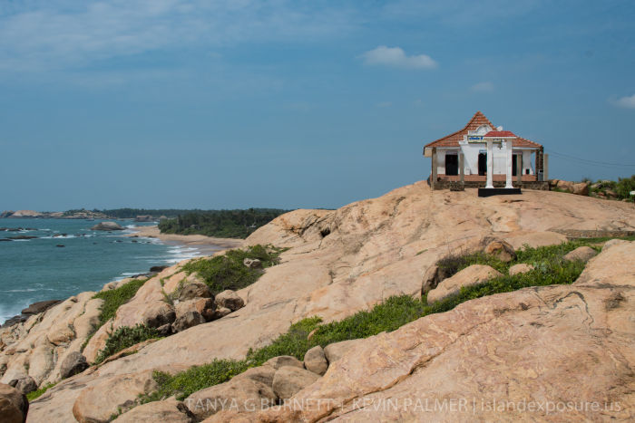

Explore the majestic cliffside temple where Princess Viharamahadevi is legendary to have landed, perched atop massive rock boulders overlooking the southern waves.
Kirinda is a village of great historical and mythological importance in Sri Lanka. It is best known for its temple, the Kirinda Viharaya, which sits on a massive rock outcrop right at the edge of the Indian Ocean. According to local folklore, this is the spot where the boat carrying Princess Viharamahadevi landed after being cast out to sea by her father, King Kelanitissa. She later became the mother of King Dutugemunu, the legendary unifier of the island.
The temple provides a dramatic viewing point, especially at sunset, where you can see the Kirinda lighthouse and the waves crashing against the rocks. The surrounding sandy beach is wild and raw, with fewer tourists than the busier resorts of the south coast. It is a place where you can feel the true power of the ocean and the weight of history in every stone.
Back to Yala Hub